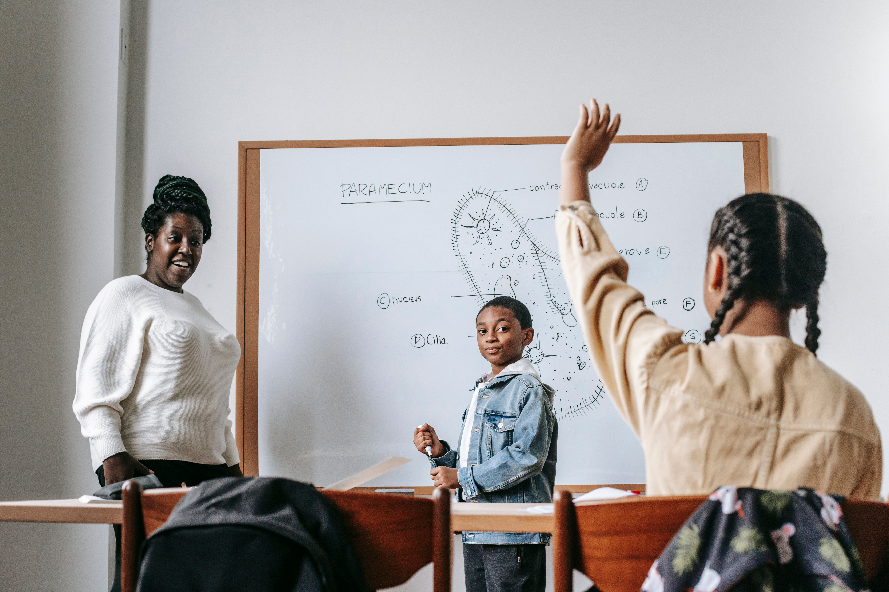

Our programmes support young people, particularly learners and young adults who can benefit from education, digital skills and career guidance. Contact us to discuss suitability and availability.
Our Programmes
Equipping young people with skills, knowledge and opportunities for a brighter future.

Digital Skills Programme
Our Digital Skills Programme helps young people develop practical digital skills that can support their education, personal development and future careers.
Participants are introduced to essential computer and internet skills and learn how technology can be used safely and responsibly.
What Participants Learn
- Basic computer skills
- Internet and online research skills
- Microsoft Office fundamentals
- Online safety and responsible technology use
- Introduction to digital careers
Academic Support Programme
The Academic Support Programme provides learners with additional educational assistance to improve their understanding, confidence and academic performance.
The programme encourages learners to develop effective study habits and become more confident in managing their schoolwork.
Support Includes
- Homework assistance
- Study skills development
- Subject support sessions
- Exam preparation
- Access to learning resources
Career & Mentorship Programme
Our Career & Mentorship Programme connects young people with mentors who can provide guidance, encouragement and practical advice about education and career choices.
Participants are encouraged to explore different career paths and develop skills that can help them prepare for further education and employment.
Programme Activities
- Career exploration
- Mentorship sessions
- CV and interview preparation
- Further education guidance
- Personal development
School Supplies & Community Support
Ubuntu Youth Foundation works with communities to provide learners with educational resources and support where it is needed most.
Community members, businesses and organisations can support these initiatives by donating resources, volunteering their time or partnering with the foundation.
Community Initiatives
- School stationery drives
- Educational resource donations
- Community outreach initiatives
- Youth development events
- Partnerships with local organisations
Support Our Programmes
Volunteers, sponsors and community partners help us expand our programmes and reach more young people.
Get Involved